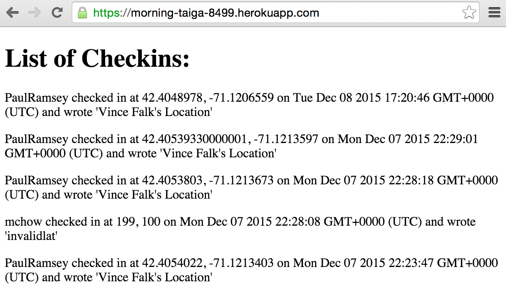
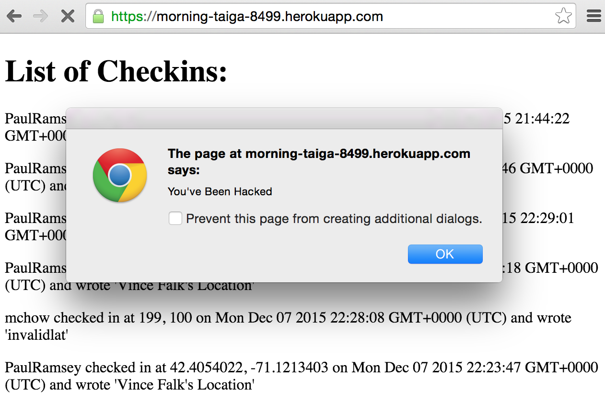
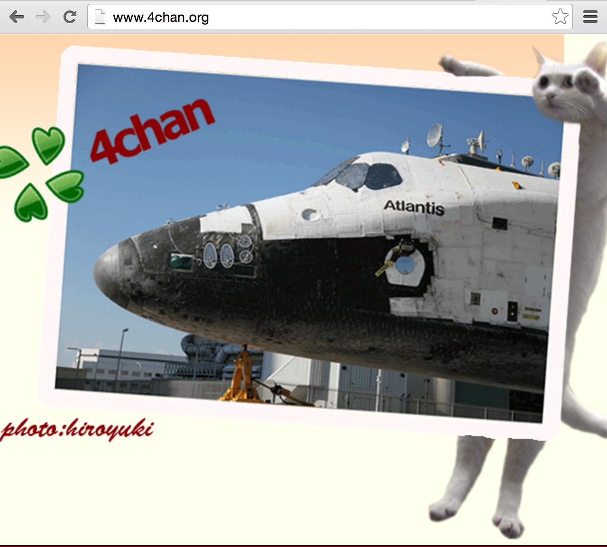
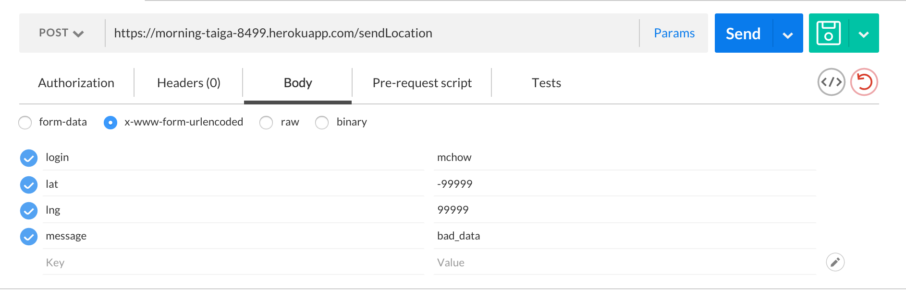
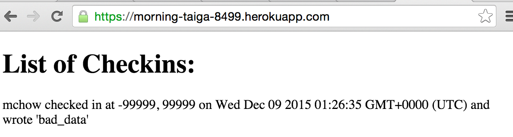

Prepared by Josh Kaltman • 12/5/15
This assessment tests the security of the server-side application for the MapChat application developed by Vincent Falk. My client completed both the MapChat (client-side; Assignment 2) and the server side application for it (Assignment 3). The MapChat application retrives your current location and sends your location with a message to a datastore that was created. The application also retrieves and displays the locations and messages of valid user logins on the map. A server-side web application using Heroku, Node.js, and the Express web framework was also developed that maintains location check-ins (login, latitude, longitude, message) for a long period of time. Accessing the server-side application on a web browser displays the list of the check-ins and messages for all logins sorted in descending order by timestamp. Login, message, and check-in timestamp are also displayed in addition to the location (latitude and longitude). Unfortunately, the applications are riddled with security and privacy vulnerabilities. I have been hired as a security consultant to document and resolve the security and privacy issues in the applications. This document identifies those vulnerabilities and suggests solutions for them.
Testing was first carried out "black-box", using just what would be available to an attacker. Attacks were performed without reading the source code. Then, I downloaded the source code of the application and performed "white box" testing. For example, after reading the source code, I noticed I could perform a Cross-Site Scripting attack and tried it out. By using just simple tools (curl and Postman), I found multiple vulnerabilities. I then reviewed the code to find more logic errors and opportunities for server-side exploitation.
Most of the vulnerabilities in this application came from putting too much faith in external input and assuming, not asserting, its correctness. Vulnerabilities were also found by simply allowing bad data to be entered and not checking if the client enters valid data. For example, multiple vulnerabilities let an attacker flood the database with invalid data, which could crash the server. Fortunately, the site does prevent anyone with invalid logins from submitting bad data or flooding the database, but users with valid logins can still submit invalid data. For example, users with valid logins can inject malicious data onto the site, which can change the site's appearance, re-route the client to another site, or crash a user's browser. Other websites that store data using the MapChat server are also at risk of the same attacks, unless they use proper security checks against the results that the server gives them.
Cross-Site Scripting
<script>) and ampersands (< won't produce <) an attacker still can use MapChat to attack a client application's code. For example, running curl --data "login=mchow&lat=100&lng=100&message=<script>alert("You've been hacked")</script>" https://morning-taiga-8499.herokuapp.com/sendLocation will inject the script as the message in the database, and causes an alert to pop up on the checkins site:
|  |  |
str.match(/[\d\w\s\]|[\~\!\@\#\$\^\*\-\_\+\;]*/g).join('');. This same escaping can be applied retroactively using db.collection.update(). The user input should never be trusted, so it is important to sanitize all data. If you remove the ability for data to be interpreted as code, such as changing < to '<' and > to '>', XSS payload samples can be avoided.Cross-Site Scripting on other GET API
curl --data "login=mchow&lat=100&lng=100&message=<script>window.location='http://4chan.org'</script>" https://morning-taiga-8499.herokuapp.com/sendLocation will inject the script as the message in the database, and causes the homepage to be immediately re-routed to 4chan.org. This affects the app.get('/') function, because the malicious script is sent back to the client and is displayed on the webapge. The client can also be re-routed to any other site or malicious webpage.
|  |
Invalid Data Entry
'/sendLocation' route, I found that so long as the login, latitude, longitude, and message are not undefined, the entire submission body will be added to the database by coll.insert(toInsert, .... Because the '/' and '/latest.json' codes simply send the response, the invalid data will still be returned by the database. For example, I used Postman to send invalid data to the '/sendLocation' POST API. The data was successfuly sent with no errors returned and on the Checkins page, you can see the invalid latitude and longitude entires (-99999 and 99999).
|  |  |
This can be resolved by adding additional checks on the user input. The following only sets the fields to be inserted if the latitude and longitude are within a valid range:
if (approvedLogins.indexOf(login) != -1 && message != undefined && login != undefined && lat != undefined && lng != undefined) {
lat = parseFloat(lat);
lng = parseFloat(lng);
if (lat >= -90.0 && lat <= 90 && lng >= -180 && lng <= 180) {
var toInsert = {
"login":login,
"lat":lat,
"lng":lng,
"message":message,
"created_at":new Date()
};
db.collection('checkins', function(error, coll) { ... } );
Issues with MapChat make it easy for attackers to change the appearance of the site and send malicious data. If my client follows my recommendations, his/her website's vulnerability will be reduced to these basic attacks. Fortunately, all the changes are easy to implement. With these recommendations, attackers will no longer be able to send scripts to change the website's appearance or re-route the website to a different page. Additionally, users will be able to send only latitudes and longitudes that are within the valid ranges. Therefore, such a task would cost approximately $400, which is a small price to pay for the potential damage that could be done.